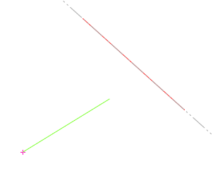

Zeichnet eine Linie von der Zeichenmarke bis zum Schnittpunkt mit der angeklickten Linie. Die Zeichenmarke wird nach dem Zeichnen der Linie an den Schnittpunkt gesetzt.
Um einen Schnittpunkt zu bilden
§Positionieren Sie die Zeichenmarke an einer beliebigen Stelle auf der Zeichenfläche.
§Tippen Sie unterhalb der Abfrage in das Eingabefeld s ein und klicken Sie anschließend die Linie an, mit der Sie einen Schnittpunkt bestimmen wollen. [Schnitt mit].
§Geben Sie einen Wert ein, der die Lage des Schnittpunkts auf der angeklickten Linie bestimmt. Bestätigen Sie mit der Eingabetaste. [Länge / Lot].
Sie können auch einen Punkt fangen und die beiden Linien mit Linksklick zum Schnitt bringen.

Im Allgemeinen Bewehrungsprogramm
Sie können die Schnittpunkt-Funktion im gesamten Bewehrungsprogramm nutzen, um z. B. bei der Bestimmung eines Verlegebereiches einen bestimmten Punkt als Start- oder Endpunkt der Verlegung zu definieren. Sie können somit Elemente gezielt an schrägen Linien ausrichten oder zeichnen.
Beispiel: Verlegung als Staffel [Formst | VeStaf]
Der Verlegebereich wird über die X- und Y-Koordinate des Anfangs- und Endpunktes beschrieben. Liegt der Anfangs- oder Endpunkt der Staffel an einer schrägen Linie, können Sie die Hilfsfunktion S [Schnitt] verwenden, um den Anfangs- und/oder Endpunkt an den Schnittpunkt zweier Linien zu setzen. Mit Rechtsklick können Sie die Betondeckung übernehmen.
Wenn Sie bei einem Parameter (X oder Y) für den Anfangs- und/oder Endpunkt die Hilfsfunktion verwenden, achten Sie darauf, auch beim anderen Parameter die Hilfsfunktion einzugeben!
§Tippen Sie in das Eingabefeld ein s ein und klicken Sie anschließend die erste Bezugslinie an. [XBer-Anf].
Falls Sie die voreingestellte Betondeckung [nom c] übernehmen möchten, achten Sie darauf, die Linie mit dem Cursor auf der Seite anzuklicken, zu der die Betondeckung berücksichtigt werden soll.
Die Linienkennung wird in die Eingabe geschrieben.
§Geben Sie nach der Linienkennung den Wert für die Betondeckung mit dem entsprechenden Vorzeichen ein und bestätigen Sie mit der Eingabetaste.
Mit Rechtsklick können Sie die voreingestellte Betondeckung übernehmen. Wenn kein Abstand angegeben werden soll, geben Sie als Differenz 0 (Null) ein.
§Tippen Sie in das Eingabefeld erneut ein s ein und klicken Sie anschließend die zweite Bezugslinie an. [YBer-Anf].
Die Zeichenmarke wird an den Schnittpunkt der ersten und zweiten angeklickten Linie gesetzt. Die Zeichenmarke entspricht dem Anfangspunkt.
§Falls der Endpunkt ebenfalls an einem Schnittpunkt zweier schräger Linien liegt, klicken Sie Bezugslinien wie bei [XBer-Anf] und [YBer-Anf] beschrieben an. [XBer-Ende]; [YBer-Ende].
Zugehörige Aufgaben:
Zugehörige Referenzen: